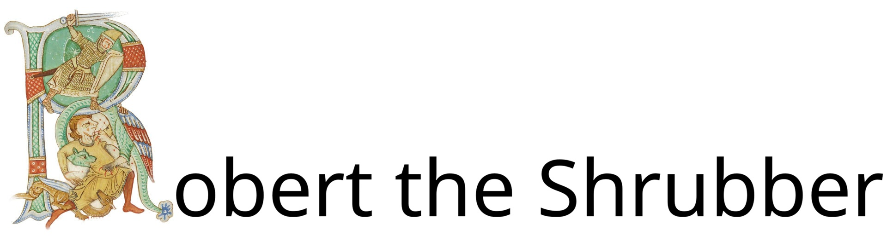
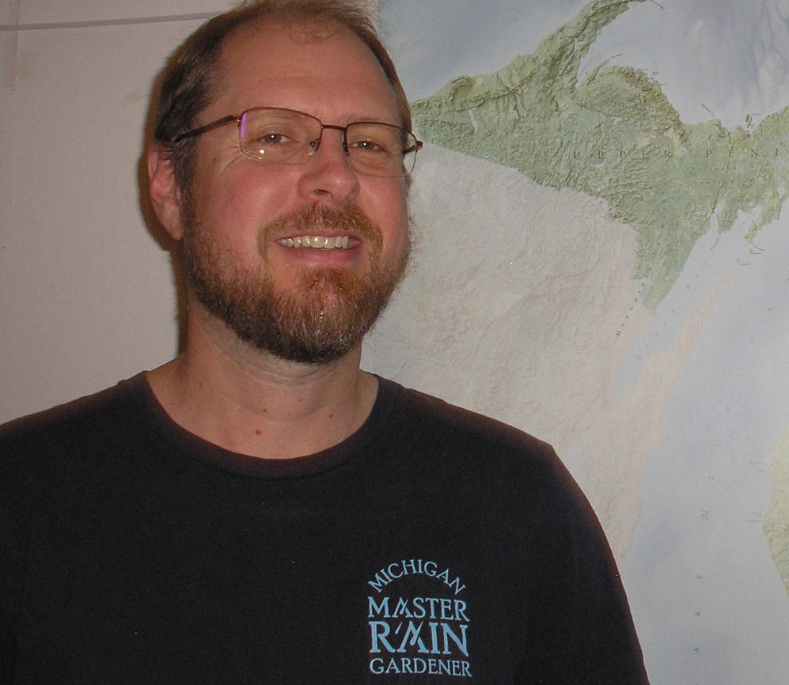

obert the ScrubbyShrubberies are my trade... I am a shrubber... My name is Robert the Shrubber22

• Over 20 years of study and field-based experience in ecological planning and design
• Maintains over 50 edible perennials (mostly native) on our urban property in Ypsilanti
• Served over 2 years in the U.S. Peace Corps in Peru
• B.S. Biology/Ecology, M.S. Geographic Information Systems, M.Ag. Agriculture
• Certifications: Soil Erosion and Sedimentation Control (SESC) and Certified Storm Water Operator (CSWO)
22Monty Python and the Holy Grail, directed by Terry Gilliam and Terry
Jones (London: Python (Monty) Pictures, 1975).
Illuminated "R" Credit: Codex Bodmer 127, fol. 98r (detail), illumination from the Weißenau Passional, ca. 1170–1200,
Fondation Martin Bodmer, accessed via Wikimedia Commons, https://commons.wikimedia.org/wiki/File:Codex_Bodmer_127_098r_Detail.jpg